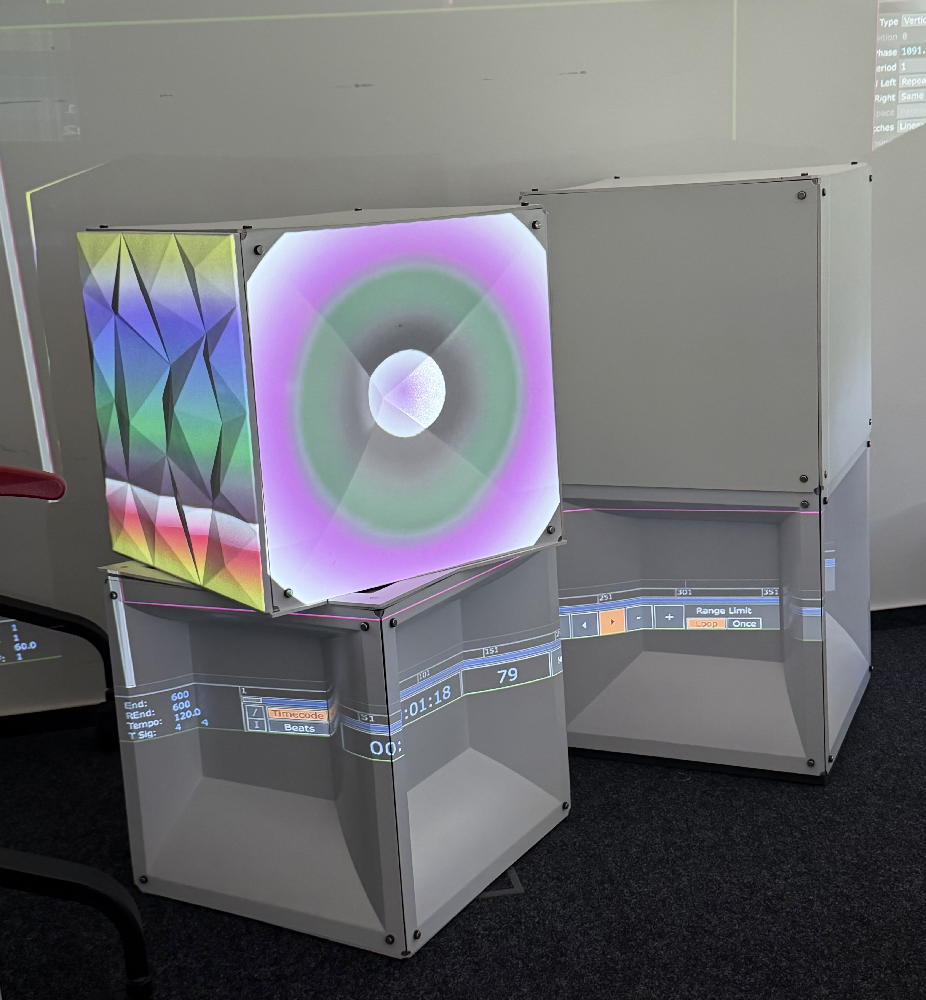
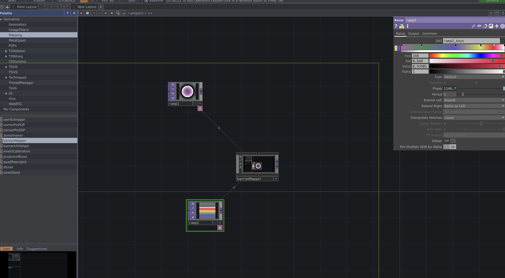
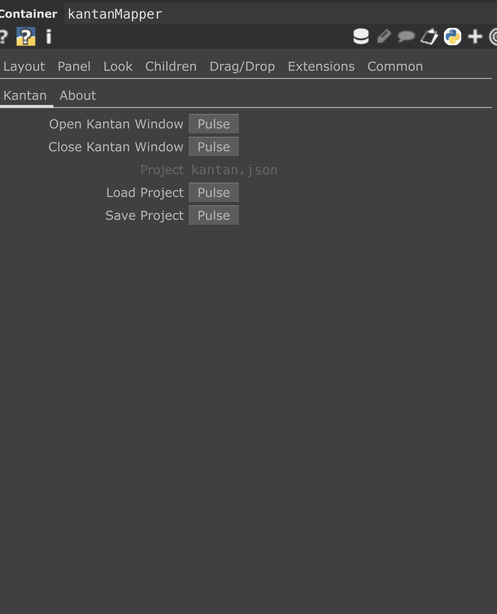
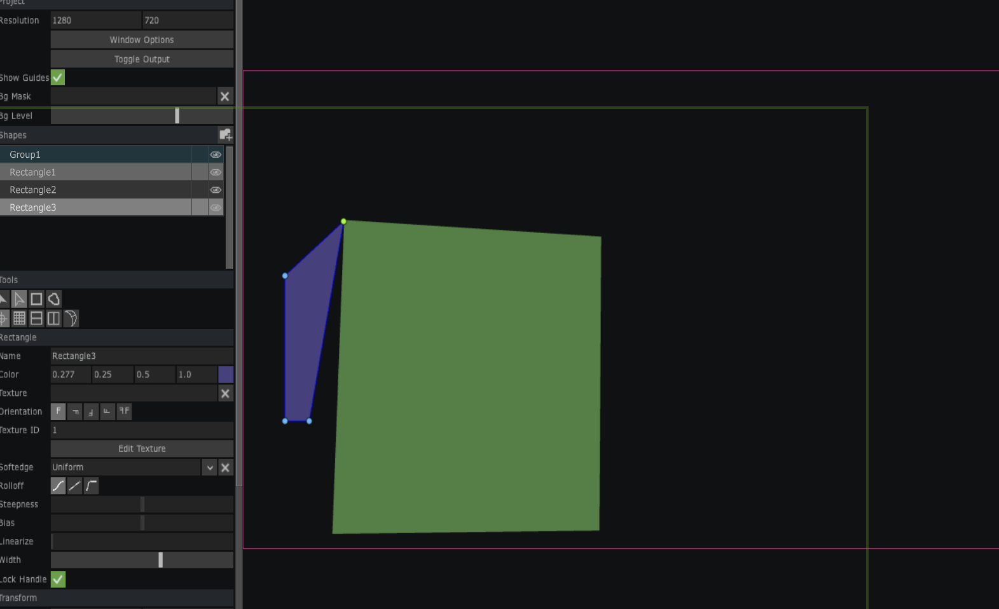
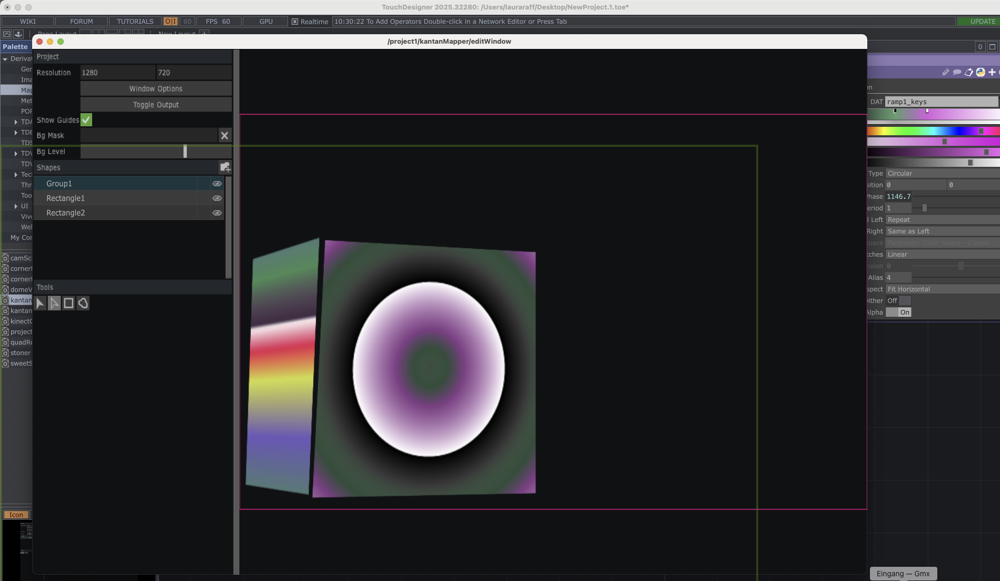

Technologie und Produktion Workshop 7: TouchDesigner – Videoprojektion mit KantanMapper
Abgabe: Mittwoch, 15. Juli 2026 – Gruppenabgabe als ZIP-Datei
gruppe_X_workshop7.zip auf Stud.IP (einmal pro Gruppe).
Im zweiten TouchDesigner-Workshop bauen Sie auf den Kenntnissen aus Workshop 6 auf. Diesmal erstellen Sie eine Videoprojektion: Sie erzeugen visuelle Inhalte mit den Operatoren Ramp und Noise oder binden eigene Fotos ein, und projizieren diese mit KantanMapper auf physische Flächen.

Schritt 1: KantanMapper auf die Arbeitsfläche ziehen
Öffnen Sie TouchDesigner. Wählen Sie in der linken Operator-Palette Mapping → KantanMapper und ziehen Sie den Operator auf die Arbeitsfläche.
KantanMapper erscheint als Container auf der Arbeitsfläche. Auf derselben Fläche erstellen Sie anschließend Ihre visuellen Inhalte.
Schritt 2: Visuals erstellen
Erstellen Sie auf der Arbeitsfläche die Inhalte, die später projiziert werden sollen. Sie haben zwei Möglichkeiten:
Option A: Generative Visuals mit Ramp und Noise
Fügen Sie einen Ramp-Operator hinzu:
Doppelklick auf die Arbeitsfläche → TOP → ramp.
- Im Parameterfenster: Reiter Ramp → Farben nach Ihrem Geschmack wählen.
- Unter Type verschiedene Ramp-Typen ausprobieren.
-
Für Bewegung: Reiter Ramp → Feld Phase:
eingeben. Der Ramp bewegt sich dann in Echtzeit.absTime.seconds
Probieren Sie zusätzlich den Noise-Operator aus:
Doppelklick → TOP → noise.
- Parameterfenster → Reiter Noise: Option Monochrome deaktivieren, um farbiges Rauschen zu erhalten.
-
Für Bewegung: Reiter Transform → Translate →
dritte Spalte:
Für schnellere Bewegung nutzen Sie statt derabsTime.seconds * 0.10.1einen höheren Wert.
Option B: Eigenes Foto (oder Video) projizieren
Doppelklick auf die Arbeitsfläche → TOP → moviefilein.
Im Parameterfenster: Reiter Play → Feld File →
Ihr Foto (oder Video) auf dem Rechner suchen und auswählen.
Schritt 3: KantanMapper-Fenster öffnen
Die erstellten Operatoren müssen lediglich auf derselben Arbeitsfläche wie der KantanMapper-Container liegen – eine direkte Verbindung ist nicht nötig. Die Zuweisung zu den Projektionsflächen erfolgt später im KantanMapper-Fenster (Schritt 5).

Öffnen Sie das KantanMapper-Fenster über den Button Open Kantan Window im Parameterfenster des Containers.

Schritt 4: Mapping auf Flächen durchführen
Schließen Sie den Projektor an und wählen Sie ihn in KantanMapper unter Output aus.
Definieren Sie Projektionsflächen (Chiclets):
- Ziehen Sie mit der Maus ein Rechteck auf die gewünschte Projektionsfläche im KantanMapper-Fenster.
- Ziehen Sie die Ecken des Rechtecks mit den Pfeiltasten, um die Fläche exakt an die physische Projektionsfläche anzupassen.
- Wiederholen Sie diesen Schritt für jede weitere Fläche, die bespielt werden soll.

Schritt 5: Operator auf Fläche ziehen
Ziehen Sie Ihre erstellten Operatoren (ramp, noise
oder moviefilein) auf die jeweiligen Flächen in KantanMapper.
Der Operator wird nun auf der definierten Fläche angezeigt und projiziert.

Speichern Sie Ihr Mapping abschließend über File → Save in KantanMapper, um es später wiederverwenden zu können.
Infos zur Abgabe
Workshop 7 ist eine Gruppenabgabe – jede Gruppe lädt einmal hoch. Sie wissen, in welcher Gruppe Sie sind.
Legen Sie die .toe-Datei sowie alle verwendeten Bilder oder Videos
in einen Ordner. Achten Sie darauf, dass TouchDesigner auf alle Assets über
relative Pfade aus dem Ordner heraus zugreifen kann.
Laden Sie den Ordner als ZIP-Datei auf Stud.IP hoch:
- Dateiname:
gruppe_X_workshop7.zip(X = Ihre Gruppennummer) - Ablageort auf Stud.IP:
Dateien/Abgaben/Workshop 7
Bitte prüfen Sie vor dem Upload:
- Öffnet sich die
.toe-Datei fehlerfrei in TouchDesigner? - Sind alle verwendeten Bilder oder Videos im Ordner vorhanden und werden korrekt geladen?
- Ist das KantanMapper-Mapping gespeichert (
File → Save)? - Ist die ZIP-Datei korrekt benannt (
gruppe_X_workshop7.zip)?
Erwartete Ergebnisse
Minimum: KantanMapper ist eingerichtet, mindestens zwei Flächen sind definiert und zwei Operatoren (Ramp, Noise oder Foto) werden darauf projiziert.
Gut: Mehr als zwei Flächen sind definiert, verschiedene Operatoren werden eingesetzt und die Flächen sind sorgfältig an die physische Projektionsfläche angepasst.
Sehr gut: Die Projektionen gehen aufeinander ein – Farben, Bewegung und Flächen sind aufeinander abgestimmt und ergeben ein stimmiges Gesamtbild. Es gibt eine (kleine) Choreografie zwischen den Flächen.